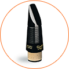
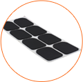
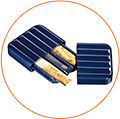

Примечательно, что в среднем регистре звуки, создаваемые инструментом, схожи с тембром человеческого голоса, что придает драматизм звучанию. Музыка, исполняемая на этом инструменте, особенно выразительна и ярка, что позволяет создавать композиции, богатые эмоциями.
Музыканты-виртуозы обычно используют несколько саксофонов. Качество инструмента не должно оставлять вопросов. Поэтому, чтобы купить саксофон-альт, важно заранее определиться с выбором. Лидерами в изготовлении саксофонов являются такие компании, как Conn-Selmer, Keilwerth, Yamaha, Cannonball, Selmer Paris, Yanagisawa, Amati, Buffet Crampon.
Надежность производителя – один из первостепенных факторов при покупке такого инструмента, как саксофон-альт, цена же будет определяться качеством и техническими параметрами.
Начинающему исполнителю лучше сначала определиться: сколько стоит саксофон альт, нужно ли ему купить новый инструмент или можно взять подержанный.
Заказать саксофон-альт в нашем магазине несложно: мы предлагаем широкий ассортимент любых музыкальных инструментов. У нас вы можете купить саксофон-альт недорого, и это будет инструмент от известного производителя, что станет дополнительной гарантией качества.
Помимо самого инструмента вам понадобятся:

Мундштук

Наклейки

Трость
Гайтан
Для джазовых композиций саксофон - ведущий инструмент. Именно звучание саксофона, его бархатный тембр - истинная суть джаза. Классическим произведениям саксофон-альт придает неповторимую глубину.

Пользуйтесь доступным инструментом в свое удовольствие, совершив ее покупку в магазине «Музхаус»!